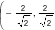
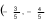

know the general form of second degree equation representing conic sections whose lines of symmetry are not necessarily parallel to the coordinate axes.
be able to apply the rotation formula to find a suitable coordinate system in which a given general second degree equation is converted to a simpler standard form.
is a circle, parabola, ellipse or hyperbola. The construction of these equations was based on the assumption that the axis of symmetry of a conic section is parallel to one of the coordinate axes. The assumption seems to be quite restrictive because the axis of symmetry for a parabola, ellipse, or hyperbola can be any oblique line as indicated in their corresponding definitions.
However, the reason why we have assumed that is not only for simplicity but there is always a coordinate system whose one of the axes is parallel to a desired line of symmetry. In particular, we can rotate the axes of our xy-coordinate system, whenever needed, so as to form a new x’y’-coordinate system such that either the x’- axis or y’-axis is parallel to the desired line of symmetry. Toward this end, let us review the notion of rotation of axes.
A rotation of the x and y coordinate axes by an angle θ about the origin O(0,0) creates a new x’y’-coordinate system whose x’-axis is the line obtained by rotating the x-axis by angle θ about O and y’-axis is the line obtained by rotating the y-axis in the same way. This makes a point P to have two sets of coordinates denoted by (x,y) and (x′,y′) relative to the xy- and x′y′-coordinate axes, respectively.(See Figure 4.30).
The angle θ considered in the above discussion is called the angle of rotation. Our aim is to find the relationships between the coordinates (x,y) and the coordinates (x′,y′) of the same point P.
To find this relationships, let P(x,y) be any point in xy-plane, θ be an angle of rotation (i.e., θ is angle between x and x’ axes ) and φ be the angle between OP and x’-axis (See Figure 4.31).
The Equations (3) and (4) are called rotation formulas. It follows that if the angle of rotation θ is given, then Equation (3) can be used to determine the x and y coordinates of a point P if we know its x′ and y′ coordinates. Similarly, Equation (4) can be used to determine the x′ and y′ coordinates of P if we know its x and y coordinates.
The given information about P and the curve are relative to the xy-coordinate system and we need to express them in terms of x’ and y’ coordinates relative to the new x′y′-coordinate system obtained under the rotation of the original axes by θ = π/4 rad about the origin. Thus, we use \(cos\frac{\pi}{4}=sin\frac{\pi}{4}= \frac{\sqrt{2}}{2}\) in the relevant rotation formula to obtain the following.
We need to express x and y in the equation xy =1 in terms of x’ and y’ using the rotation formula (3). So, again since \(cos\left ( \frac{\pi}{4} \right )=sin\left ( \frac{\pi}{4} \right )=\frac{\sqrt{2}}{2}\) ,we obtain the formulam(3)
Note that this is an equation of a hyperbola with center at origin vertices \(\left ( -\sqrt{2} ,0\right )\) and \(\left ( \sqrt{2} ,0\right )\) in the x’y’-coordinate system with principal axis on x’-axis. Since the x and y- axes were rotated though an angle of π/4 to obtain x’ and y’-axes, the hyperbola can be sketched as in Figure 4.32. (You may use Formula (3) to show that the vertices \(\left ( -\sqrt{2} ,0\right )\) and \(\left ( \sqrt{2} ,0\right )\) are (-1,1) and (1,1), respectively, relative to the x and y-axes).
To apply the standard equation of ellipse we use the x’y’-coordinate system such that the x’-axis coincide with the major axis of the ellipse. Therefore, the equation of the ellipse relative to the x’y’ system is
represents a conic section (a parabola, ellipse or hyperbola) whose axis of symmetry is parallel to one of the coordinate axes except in degenerate cases. In Subsection 4.6.1 we have also seen some examples of conic sections whose equations involve xy term when their lines of symmetry are not parallel to either of the axes. Now we would like to analyze the graph of any quadratic (second degree) equation in x and y of the form
where B≠0. In order to analyze the graph of Equation (2), we usually need to convert it into an equation of type (1) in certain suitable reference system. To this end, we first prove the following Theorem.
there is a rotation angle θ ∈(0,π/2) through which the xy-coordinate system rotates to a new x′y′-coordinate system in which Equation (2) reduces to the form
Proof: Let the xy-coordinate system rotated by an angle θ about the origin to form a new x′y′-coordinate system. Then, from rotation formula (3), we have
Here the exact expressions for A’, C’, D’, E’ and F’ are omitted as they are irrelevant. What we need is to get the angle of rotation θ for which Equation (4) has nox′y′ term, that is, B’ = 0. This means that,
That is, if we choose the angle of rotation θ satisfying (5), then B’ = 0 in Equation (4) so that the resulting equation in x′y′-coordinate system is in the form of Equation (3). Moreover, we can always find an angle that satisfies cot(2θ) = (A−C)/B for any A, C, B ∈ ℜ, B≠0 since the range of the cotangent function is the entire set of real numbers. Note also that since 2θ ∈(0, π), the angel of rotation θ can always be chosen so that 0 < θ < π/2. So, the Theorem is proved.
The rotation of the xy-coordinate system by angle θ creates an x′y′-coordinate system in which a general second degree equation Ax2 + Bxy + Cy2 + Dx + Ey + F = 0, B≠0,
Example 4.28: Use rotation of axes to eliminate the xy term in each of the following equations, describe the locus (type of conic section) and sketch the graph of the equation
This is an equation of a parabola. Its vertex is (h′,k′) = (0,2) relative to the x’y’-system, principal axis is on y’-axis and open towards negative y’ direction. (You can show that its vertex is (h, k) =

relative to the xy-system). The graph of the equation is sketched in Figure 4.34.
which is an ellipse with center at (h′,k′)= (−1, 0) relative to the x’y’-system, major axis on x’-axis (which is the line y=(4/3)x ), length of major axis =4 and length of minor axis =2. (You can show that the center is (h, k) =

relative to the xy-system). The graph of the equation is sketched in Figure 4.35.
2. Use rotation of axes to eliminate the xy term in each of the following equations, describe the locus (type of conic section) and sketch the graph of the equation.